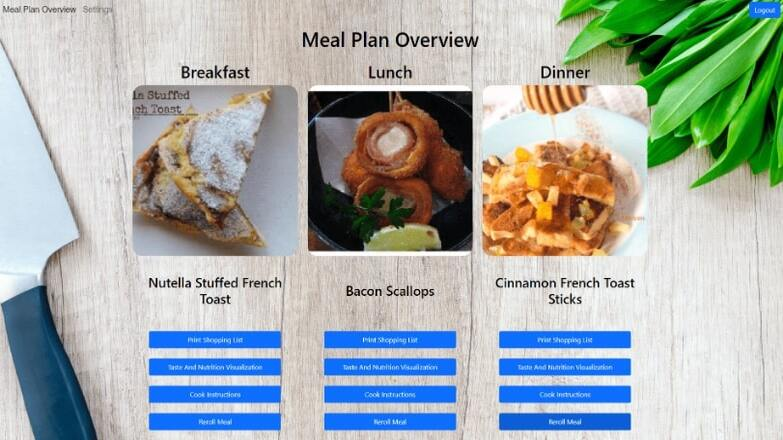
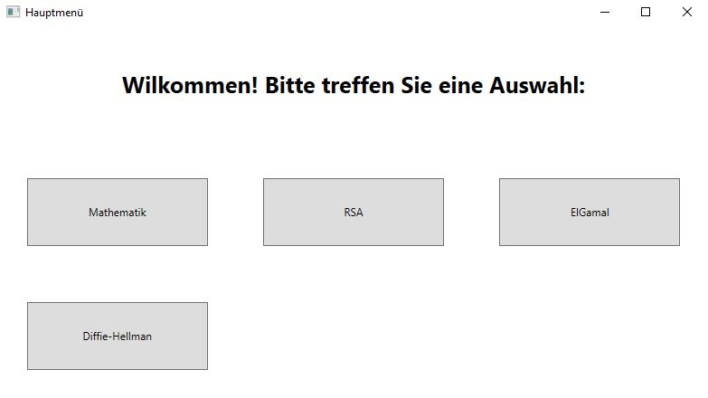
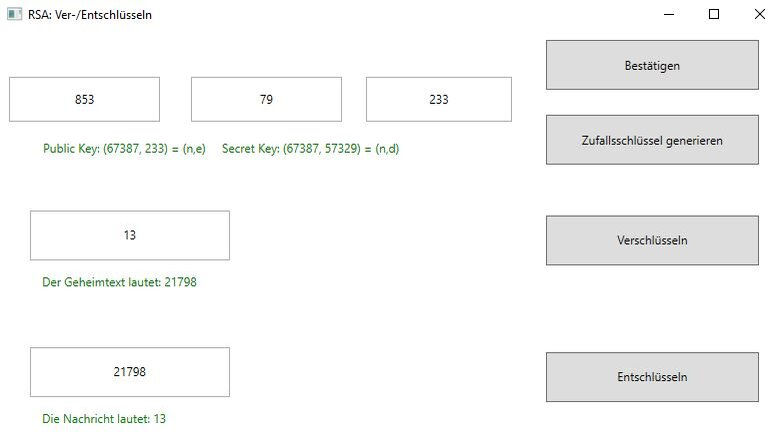
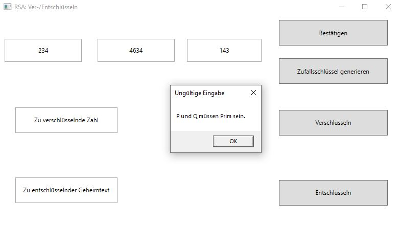

Projekte.
Website zum Erstellen individualisierter Ernährungspläne
Hilft dabei, auf Basis vorhandener Zutaten und eventuellen
Nahrungsunverträglichkeiten individualiserte Ernährungspläne zu erstellen.
GitHub
Kryptographie - MultiTool (Beta)
  Hilft dabei, sich auf Mathematik- und Kryptographie-Klausuren
vorzubereiten. Das Tool bietet umfassende Funktionen, die das kontrollieren der
übungsaufgaben,
Altklausuren und der Rechenwege effizient und angenehm gestalten. Ungültige Eingaben werden
von
vonherein verhindert. Umfasst außerdem ein leicht zu bedienendes GUI.
Download
Verbesserungsvorschläge, Kritik oder gefundene Bugs? Kontaktieren.